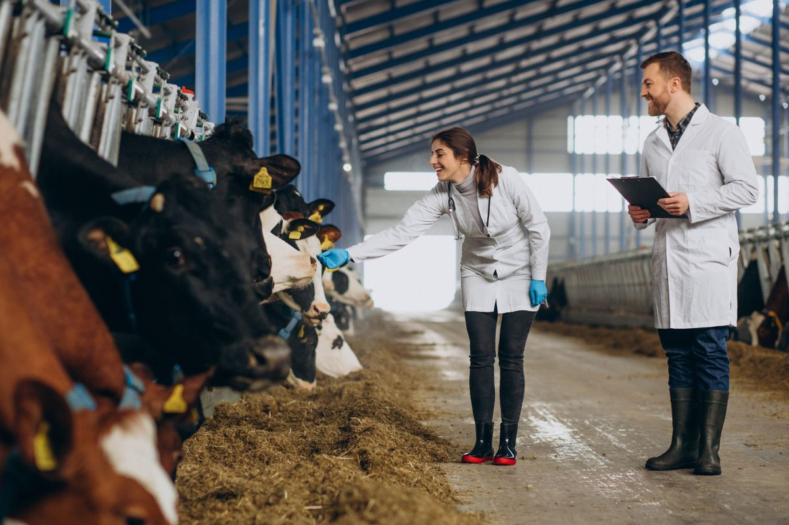

Meu primeiro post
A Zootecnia é a ciência responsável pela criação, manejo, alimentação, reprodução e bem-estar dos animais de produção. Seu objetivo é aumentar a produtividade de forma sustentável, garantindo qualidade dos produtos e respeito aos animais e ao meio ambiente.